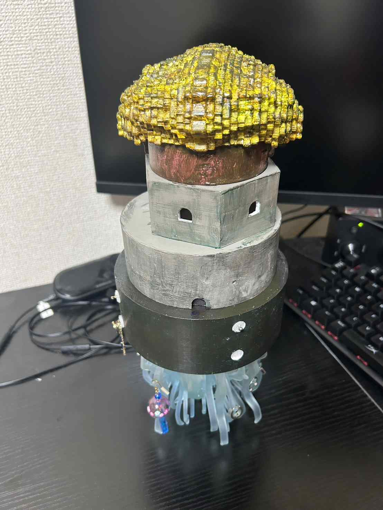

最終課題
アクセサリースタンド
私が考えた誰かの心を動かすものとして制作したのはアクセサリースタンドです。
その誰かは自分にしました。まず、考えたことが自分が何が欲しいのか、またどんなもの
が欲しいのかです。考えていたら前々からアクセサリースタンドが欲しいことを思い出し
ました。次に考えたことはデザインです。最初は作ったものよりもシンプルなものをかん
がえていたが、考えていくうちにこんな風にしたらもっと楽しくなりそうと思い形が変わっ
ていきました。


最初は左側にあるようにアクリル板を重ねて作ろうともしていたが、途中で
右側のデザインが思いついてスケッチしてみたら作りたいと思い右側をを作ろ
うと思った。
完成品

＊比較のために隣にワセリンがある＊大きさ的に5つに分けて作成した＊
gcode atama stl atama
gcode siro1 stl siro1
gcode siro2 stl siro2
gcode dodai stl dodai
gcode nekko stl nekko
こだわりポイント
- 全体的に青をイメージしたデザイン
- 下にかけるだけではなく土台の部分に穴を開けたことで差し込める
- 根元を直接塗るのではなく色水に付けることで透け感のあるグラデーションになっている
- 中に空洞を作って、中にライトを入れることで隙間から光が漏れ出すようにした
- 中が光っているときは上の色が黄緑から赤色になる
ビデオ
使用機材
・３Dプリンター
・光造形の３Dプリンター